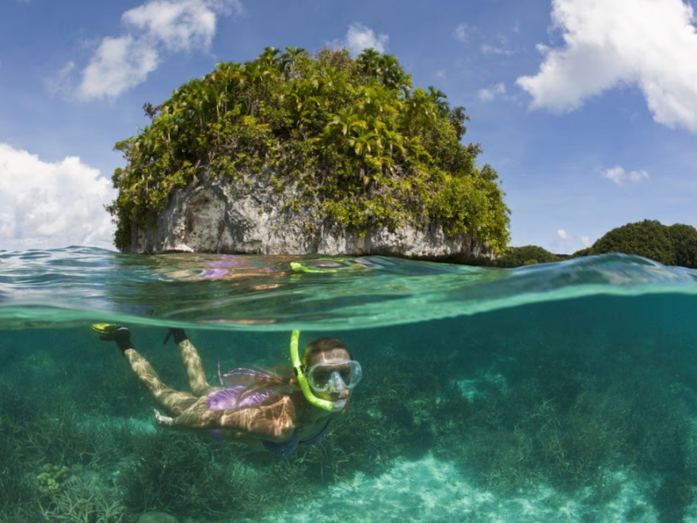

O Turismo em Palau
O turismo é uma das atividades mais importantes da economia de Palau e também um dos principais motivos para o país ser conhecido mundialmente. Localizado na região da Oceania, no Oceano Pacífico, Palau atrai turistas de diversas partes do mundo por causa das suas praias paradisíacas, águas cristalinas e paisagens naturais impressionantes. Mesmo sendo um país pequeno, o território possui uma enorme variedade de atrações naturais e é considerado um dos lugares mais bonitos do planeta.
Uma das maiores atrações turísticas de Palau são as famosas Rock Islands. Essas ilhas rochosas cobertas por vegetação tropical formam uma paisagem muito conhecida internacionalmente. As águas ao redor das ilhas possuem diferentes tons de azul e apresentam grande diversidade marinha. O local é tão importante ambientalmente que foi reconhecido como Patrimônio Mundial da UNESCO. Muitos turistas realizam passeios de barco pela região, aproveitando as praias isoladas e as lagoas naturais.
Outro ponto turístico extremamente famoso é o Jellyfish Lake, conhecido também como Lago das Águas-Vivas. Esse lago abriga milhares de águas-vivas douradas que convivem de forma praticamente inofensiva aos visitantes. O local se tornou um dos símbolos turísticos de Palau e atrai pessoas interessadas em experiências diferentes e contato direto com a natureza.
O mergulho é uma das atividades mais populares do país. Palau é considerado um dos melhores destinos de mergulho do mundo, principalmente pela qualidade das águas e pela biodiversidade marinha. As águas transparentes permitem observar peixes tropicais, corais coloridos, tartarugas marinhas, arraias e diversas outras espécies. Muitos mergulhadores profissionais viajam até Palau para explorar os recifes de coral e os locais de mergulho profundo.
Além do mergulho, os turistas também podem realizar trilhas em áreas tropicais, passeios de barco, atividades de pesca, visitas culturais e passeios ecológicos. O turismo em Palau é muito ligado ao contato com a natureza e à tranquilidade das ilhas. Muitas pessoas visitam o país buscando descanso, silêncio e paisagens naturais preservadas.
O governo de Palau investe bastante no turismo sustentável. Diversas leis ambientais foram criadas para proteger os oceanos, os animais marinhos e os recifes de coral. Algumas áreas possuem proteção especial para evitar impactos causados pelo excesso de visitantes. Essas medidas ajudaram Palau a se tornar referência internacional em preservação ambiental.
A infraestrutura turística do país inclui hotéis, restaurantes, empresas de mergulho e serviços especializados para turistas estrangeiros. A cidade de Koror é considerada o principal centro turístico do país, concentrando grande parte das atividades econômicas e turísticas.
O turismo também ajuda na valorização da cultura local. Muitos visitantes têm contato com danças tradicionais, músicas típicas, artesanato e costumes da população. Dessa forma, o turismo não movimenta apenas a economia, mas também contribui para a preservação cultural do país.
Atualmente, Palau é reconhecido internacionalmente como um dos destinos mais bonitos da Oceania. A combinação entre praias paradisíacas, preservação ambiental, mergulho e cultura tradicional faz com que o país seja um exemplo de turismo ecológico e sustentável. Por esse motivo, milhares de pessoas continuam visitando Palau todos os anos em busca de paisagens naturais únicas e experiências inesquecíveis.
